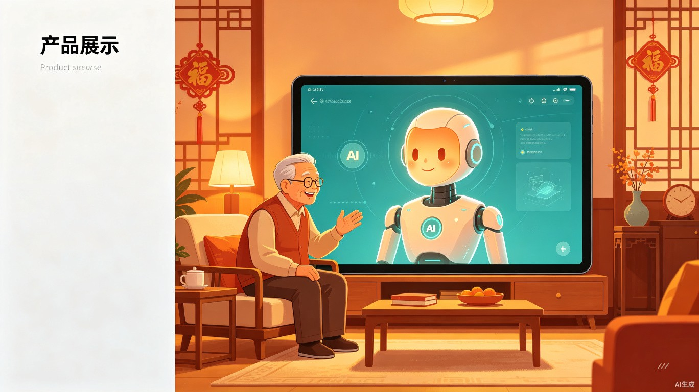
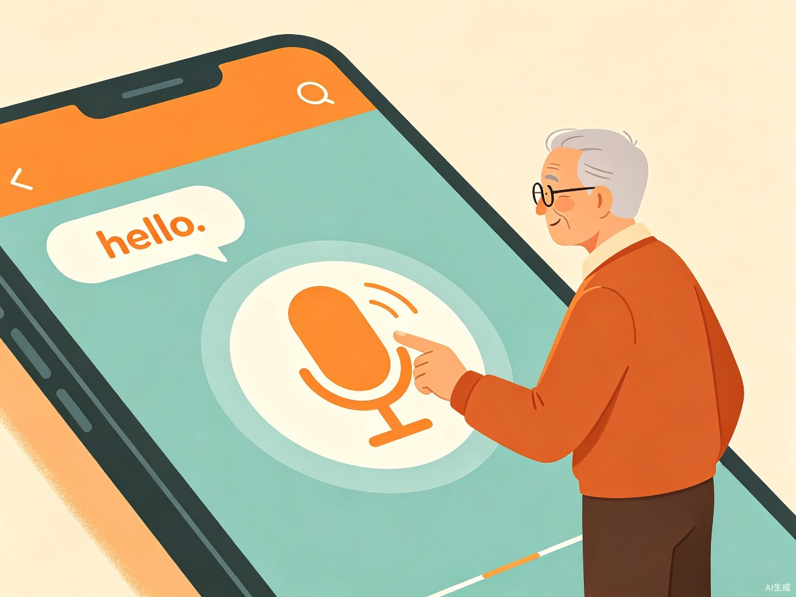
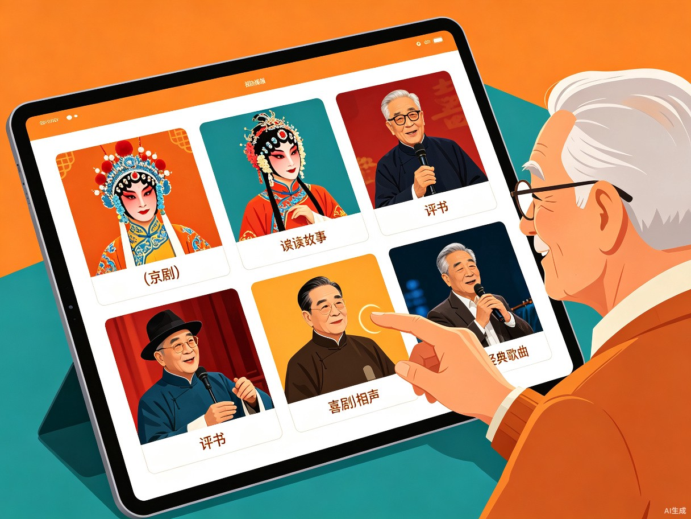
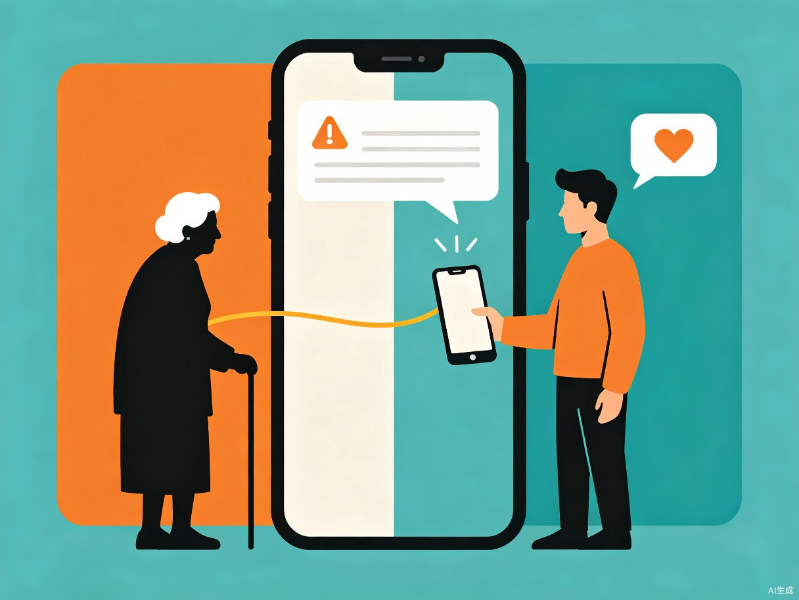
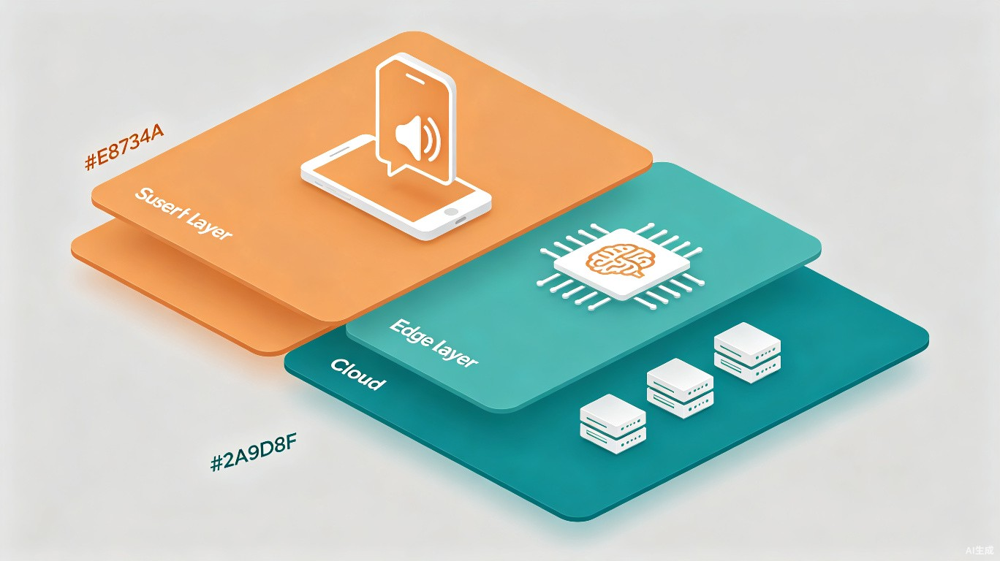

独居老人不会用智能手机，精神生活匮乏、孤独感强，且身体异常时子女无法及时知晓。
我的父母年纪大了，经常一个人在家，不会打字不会用手机，想看个视频都找不到。现在AI技术成熟了，我想用AI做一个真正适合他们生活的产品。
一款面向60岁以上老年人的AI语音陪伴App，核心功能为语音对话、智能视频推荐、情绪关怀及子女安心通知。老人按住按钮开口说话，AI陪聊、推视频、守护安全。
普通App界面复杂、需要打字搜索，老人根本操作不了
想看京剧、评书但不知道在哪找，搜索关键词也打不出来
独居在家一整天没人说话，孤独感强烈
老人身体不舒服或情绪异常，子女往往事后才知道
我国2.8亿60岁以上老年人中，仅30%能熟练使用智能设备，超半数不会查天气、不会问医疗、独居无人可聊。
面向哪些用户：60岁以上、独居或子女不在身边的老年人，尤其是不擅长使用智能手机的农村老人及患有慢性疾病（如癫痫等）需要关注身体状况的老年群体。
使用场景：老人独自在家无聊想找人说话或看视频时；身体不舒服、情绪低落需要陪伴和安慰时；子女在外工作想了解父母今日状态时。
老人按住按钮直接说话，AI用语音回复，像家人一样聊天陪伴。全程语音交互，无需打字，无需复杂操作。
根据对话内容理解老人喜好，精准推送戏曲、评书、相声、养生等符合老人口味的高质量视频内容。
AI在对话中感知老人情绪状态，低落时主动推送积极正能量的内容，给予温暖的心理支持。
当AI检测到老人提及身体不适、情绪异常等关键词时，自动向子女发送提醒消息，让远方子女第一时间知晓。



老人按住说话
STT转文字
大模型分析意图
匹配视频推送
TTS播报

| 模块 | 技术方案 | 成本 | 说明 |
|---|---|---|---|
| 语音识别 (STT) | 科大讯飞API / Whisper.cpp本地 | 免费额度 / 零费用 | 老人说话转文字，支持方言 |
| AI对话 (LLM) | 豆包API / 通义千问API | 约¥5-10/月/用户 | 理解意图、生成回复、推荐内容 |
| 语音合成 (TTS) | Edge-TTS / Piper本地 | 免费 | AI回复转语音播报 |
| 情绪识别 | 关键词匹配 + 语音特征分析 | 零费用 | 本地规则引擎，无需API |
| 异常检测 | 关键词触发 + 情绪阈值 | 零费用 | 检测身体不适、情绪异常 |
| 子女通知 | 微信服务号 / 极光推送 | 免费 | 异常时自动推送消息给子女 |
| 前端开发 | Flutter / UniApp | 免费 | 跨平台，一套代码安卓+iOS |
| 视频播放 | 内置播放器组件 | 免费 | 大按钮控制，语音指令 |
本地模型 + 服务器通知
云端API + 免费语音服务
批量API + 本地缓存优化
银发经济市场规模持续增长，子女为父母购买陪伴类产品的付费意愿强烈。小伴以"让老人不孤单、让子女更安心"为核心卖点，可面向C端子女付费订阅，也可与社区养老、智慧助老项目合作推广，具备清晰的商业化路径。
一个按钮，一句话，让老人不孤单，让子女更安心。不让他们学科技，而是让科技适应他们。